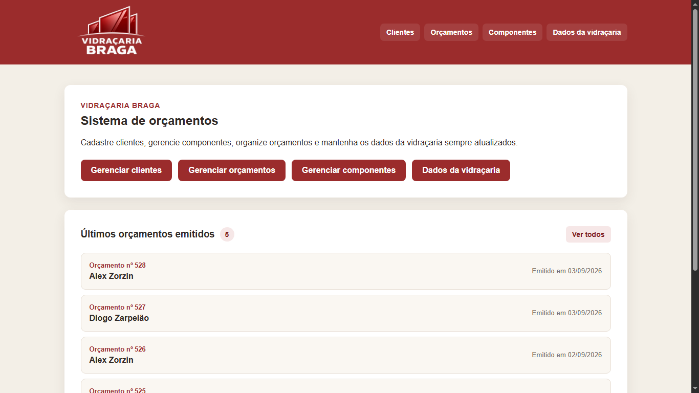
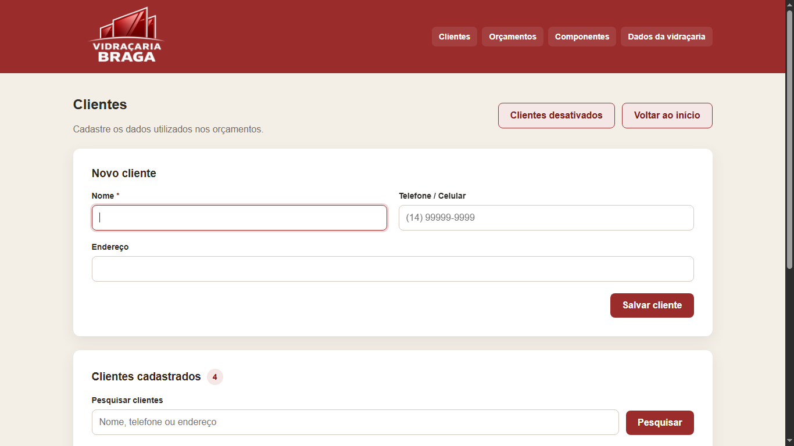
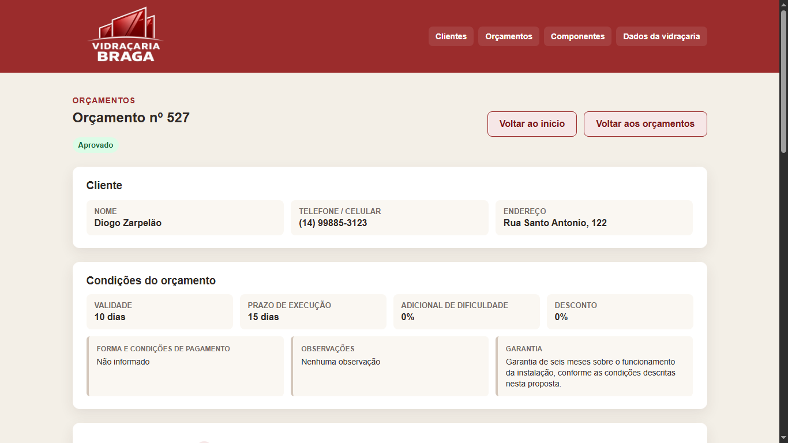
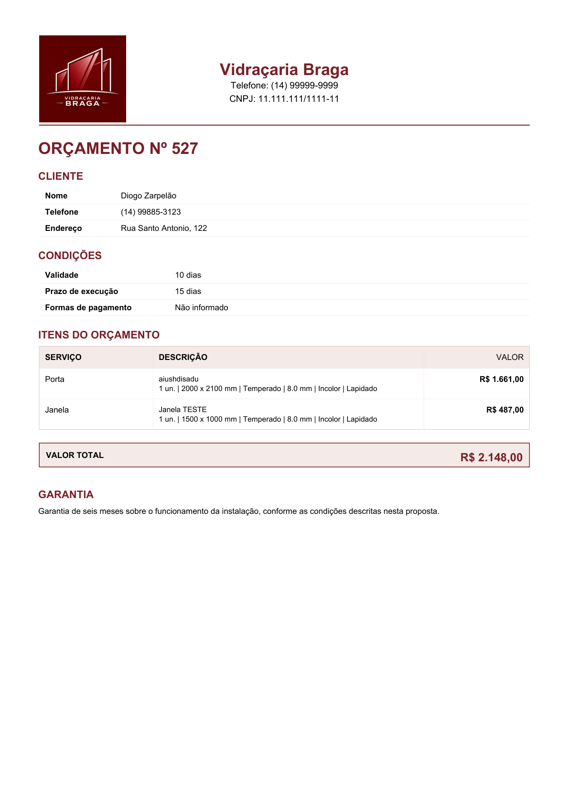

Menos cálculo manual
Medidas, área do vidro, componentes e mão de obra participam automaticamente da composição dos valores.
Sistema web de orçamentos
O Braga Budget centraliza clientes, serviços, materiais, mão de obra e ajustes comerciais em um fluxo simples, reduzindo cálculos manuais e facilitando a criação de propostas profissionais.

Sobre o projeto
O Braga Budget foi desenvolvido para agilizar e padronizar o processo de criação de orcamentos de uma vidraçaria, substituindo cálculos e organização manual por um fluxo centralizado.
Medidas, área do vidro, componentes e mão de obra participam automaticamente da composição dos valores.
Clientes, itens, componentes, condições e status ficam organizados dentro do mesmo fluxo operacional.
O sistema gera uma proposta comercial limpa em PDF e PNG, pronta para ser apresentada ou enviada ao cliente.
Principais funcionalidades
Cadastro, edicao, ativacao e organizacao dos clientes utilizados nos orcamentos.
Um mesmo orcamento pode reunir diferentes serviços, medidas e especificações.
Conversão automática das medidas em milímetros para area utilizada na composicao do vidro.
Kits, acessorios e demais componentes podem ser vinculados individualmente aos itens.
Calculo automatico por item com possibilidade de ajuste manual quando necessário.
Adicionais, descontos e valor final podem ser ajustados de acordo com a negociação.
O valor final pode ser distribuído proporcionalmente entre os itens sem expor a composição interna.
Propostas comerciais prontas para impressão, armazenamento e compartilhamento.
Demonstração visual
As imagens abaixo são capturas reais da aplicacao.



Fluxo do sistema
Tecnologias
Arquitetura
O sistema real utiliza Flask no backend, templates HTML renderizados pela aplicação e SQLite como banco de dados local.
Esta página publicada no GitHub Pages é apenas a camada estática de apresentação do projeto. Nenhuma funcionalidade do backend Flask ou do banco de dados é executada aqui.
Status do projeto
O Braga Budget está em evolução contínua. A versão atual foi instalada e validada operacionalmente, enquanto novas etapas do projeto serão desenvolvidas conforme o uso e as necessidades identificadas.
Projeto completo
O repositório público contem o código-fonte, documentacao tecnica e histórico de desenvolvimento do projeto.